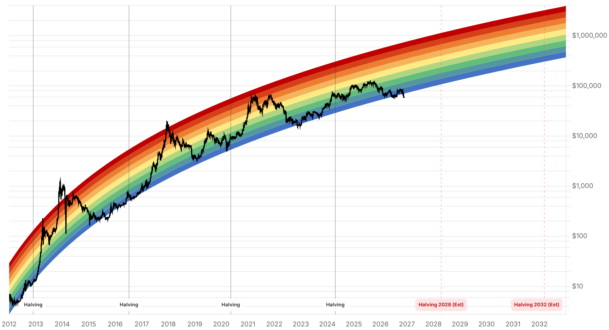

Reporte financiero
BTC cotiza en vivo a USD 59.230,77 (07:13 UTC), -0,86% frente al cierre previo de USD 59.745,65, profundizando la caída de ayer -la serie semanal (19 al 25 de noviembre) marca ahora -4,31%, con un nuevo mínimo de la ventana hoy. La novedad más relevante es que se resolvió, en sentido negativo, la 'prueba de Wall Street' del lunes 23 de noviembre que el reporte de ayer dejó pendiente: Farside/tftc.io confirmó -USD 569,7M en salidas netas de ETFs ese día (IBIT: -USD 509,3M), es decir que la reapertura bursátil no trajo ningún giro hacia flujos positivos. Con ese dato ya oficial, noviembre acumula -USD 4.706,6M en 16 jornadas (14 negativas, 2 positivas) según Farside, con el viernes 20-nov como el peor día individual (-USD 669,2M) y un promedio diario de -USD 294,2M. Farside todavía no publica el dato del martes 24-nov, pero prensa especializada (SoSoValue) reporta ese día como el sexto consecutivo en rojo, con -USD 231,56M netos (IBIT: -USD 175,30M) -una cifra preliminar de una fuente distinta a la de referencia de este reporte, no de Farside-, lo que llevaría el acumulado de noviembre cerca de -USD 4.900M si se combina con el dato oficial de Farside. El Fear & Greed Index subió levemente a 13 (vs. 11 de ayer), rompiendo la racha de tres días estancada en ese valor, pero se mantiene en 'Extreme Fear'. Sin comentario nuevo verificable de Mark Yusko (su declaración más reciente sigue siendo del 18 de noviembre) ni de Christopher Waller hoy; tampoco hay novedad en la exclusión de Strategy (MSTR) de los índices MSCI (sigue efectiva al cierre del 30 de noviembre, sin cambios desde el anuncio del 11-nov), la Clarity Act, BTCPay Server, la apelación del Reino Unido sobre los 61.000 BTC, Cantor Fitzgerald, ni el reclamo no verificado sobre Irán.
Tras la reversión de ayer del rebote de tres días, bitcoin sigue cayendo hoy: cotización en vivo de USD 59.230,77 a las 07:13 UTC, -0,86% frente al cierre previo de USD 59.745,65. La serie de cierres diarios de Yahoo Finance de los últimos 7 días (19 al 25 de noviembre) muestra una caída semanal de -4,31%, con el máximo de la ventana en USD 61.901,82 (19-nov) y un nuevo mínimo hoy en el precio en vivo, por debajo incluso del piso de USD 58.798,98 marcado el 20-nov. El nivel actual queda otra vez bajo USD 60.000, confirmando que el rebote de los días 21-23 de noviembre no logró sostenerse.
El reporte de ayer señaló la reapertura bursátil del lunes 23-nov como la primera oportunidad de ver participación institucional confirmada, sin datos aún disponibles. Hoy Farside/tftc.io publicó esa cifra: -USD 569,7M en salidas netas, con IBIT de BlackRock aportando -USD 509,3M de ese total (FBTC +USD 13,3M, BITB -USD 12,6M, BTC -USD 61,1M). El resultado es negativo e inequívoco: no hubo ninguna reversión hacia flujos positivos al reabrir Wall Street, extendiendo la racha de salidas que ya lleva 14 de las últimas 16 jornadas de noviembre en rojo según esta misma fuente.
Para el martes 24 de noviembre, Farside/tftc.io todavía no publica ningún dato al momento de esta edición. Sin embargo, cobertura de prensa (The Block, Kucoin) citando datos de SoSoValue -una fuente distinta a la de referencia de este reporte- reporta ese día como el sexto consecutivo de salidas netas, con -USD 231,56M en total y -USD 175,30M atribuidos a IBIT. Si esa cifra se confirma y se suma al acumulado oficial de Farside (-USD 4.706,6M hasta el 23-nov), noviembre quedaría cerca de -USD 4.900M en 17 jornadas, acercándose al umbral de -USD 5.000M que ya mencionan algunos medios. Se trata de una cifra preliminar de otra fuente, no de Farside, por lo que se señala como pendiente de confirmación oficial, no como dato cerrado.
El índice de alternative.me pasa hoy de 11 (su valor de los tres días previos) a 13 -una mejora marginal que rompe el estancamiento reportado ayer, pero sin salir de la zona de 'Extreme Fear'-. El movimiento es demasiado pequeño para leerse como un cambio de sentimiento de fondo, especialmente frente a una nueva caída de precio y la confirmación de salidas de ETFs del lunes.
El comentario más reciente ubicable de Mark Yusko sigue siendo del 18 de noviembre, sin matices nuevos hoy. No se encontró un comentario nuevo verificable de Christopher Waller sobre la reunión de diciembre de la Fed -las búsquedas de hoy arrojaron resultados mayormente desactualizados o de 2025, sin una fuente fechada y confiable para noviembre de 2026-, por lo que su condición reportada en ediciones anteriores (apoyar 25pb en diciembre solo si se señala otra alza en enero) se mantiene sin cambios reportables. La exclusión de Strategy (MSTR) de los índices MSCI sigue efectiva al cierre del 30 de noviembre, sin novedad desde el anuncio original del 11-nov. Tampoco hay novedades en la Clarity Act, BTCPay Server, la apelación del Reino Unido sobre los 61.000 BTC, Cantor Fitzgerald, ni el reclamo no verificado sobre Irán -se repite brevemente para que quede constancia de que se revisó, no porque haya cambiado.
| Periodo | Valor |
|---|---|
| 19 nov | 61901.82 |
| 20 nov | 58798.98 |
| 21 nov | 60094.09 |
| 22 nov | 61161.91 |
| 23 nov | 61210.98 |
| 24 nov | 59747.77 |
| 25 nov (en vivo) | 59230.77 |
| Periodo | Valor |
|---|---|
| Hoy | 13 |

“We are in a bad liquidation cycle right now.”
“If the Fed moves by a quarter point in December, officials should signal another hike is likely in January.”
El precio profundizó hoy la caída de ayer, marcando un nuevo mínimo de la ventana semanal (-4,31%) y volviendo a cotizar bajo USD 60.000. La 'prueba de Wall Street' del lunes 23-nov, pendiente en el reporte de ayer, se resolvió en sentido negativo: -USD 569,7M en salidas confirmadas por Farside, sin señal de reversión institucional. El Fear & Greed Index mejoró apenas de 11 a 13, insuficiente para hablar de un cambio de sentimiento.
Con el dato oficial de Farside ya en -USD 4.706,6M para noviembre (16 jornadas, 14 negativas) y prensa reportando un sexto día consecutivo de salidas el 24-nov (pendiente de confirmación oficial), el patrón de salidas sostenidas que cerró la semana pasada en su peor nivel desde junio no muestra señales de revertirse. La condición de Waller sobre señalar una alza adicional en enero si se opta por 25pb en diciembre sigue vigente, sin comentario nuevo verificable hoy.
Sin cambios en los objetivos de precio de largo plazo ya reportados en ediciones anteriores (Citigroup, Bernstein, Standard Chartered, Tom Lee, NYDIG, Armstrong, piso de costo de producción de JPMorgan en USD 94.000). La lectura de Mark Yusko -ciclo en su 'primavera' pese al dolor de corto plazo, sin matices nuevos desde el 18 de noviembre- sigue siendo la visión constructiva más reciente disponible.
La cifra de -USD 231,56M para el 24-nov citada por prensa proviene de SoSoValue, no de Farside (la fuente de referencia de este reporte), y Farside aún no publica ese día. Conviene esperar la confirmación oficial antes de dar por cerrado el acumulado de noviembre cerca de -USD 5.000M que ya circula en medios.
El salto de 11 a 13 en el índice es demasiado pequeño para leerse como cambio de sentimiento, más aún cuando ocurre el mismo día en que el precio marca un nuevo mínimo semanal y se confirma la peor salida de ETFs de la 'prueba de Wall Street'. Mantener la cautela hasta ver una mejora sostenida de varios días.
Sin comentario nuevo verificable hoy: Waller condicionó su apoyo a un movimiento de 25pb en diciembre a que se señale explícitamente otra alza en enero. Sigue siendo el catalizador macro dominante de mediano plazo.